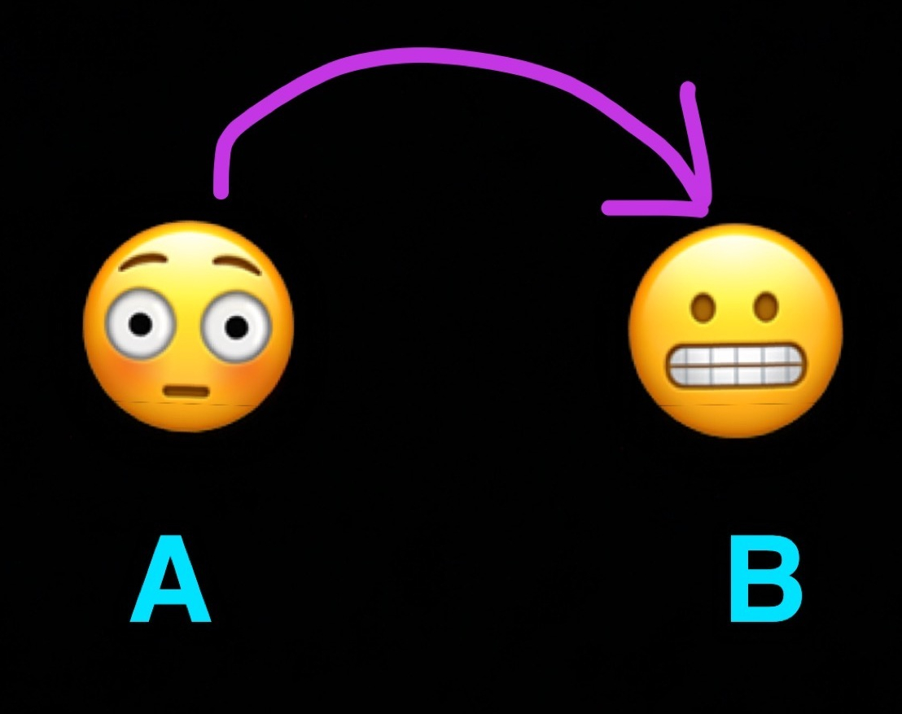
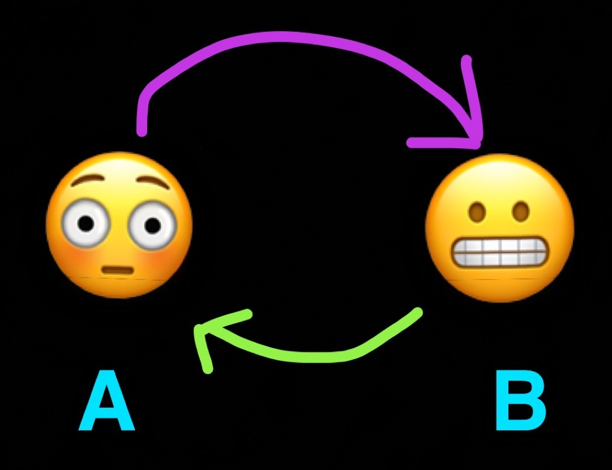
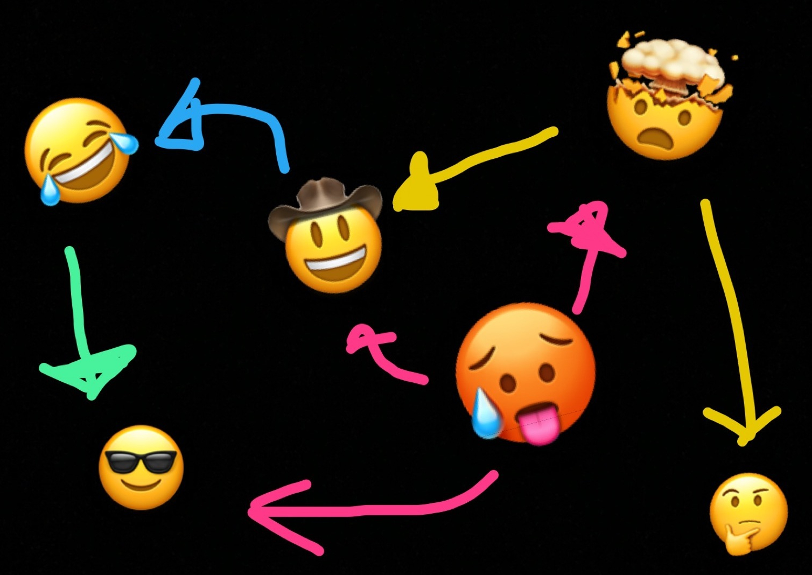

magical shell utilities: tsort
Written: 2020-10-30 to 2020-10-31Graph theory comes up a lot more often than you think. Whenever you run a search, download packages, or do anything on the Internet really, you’re reaping its benefits without even realizing. You might be familiar with sort if you’ve done any work in the shell beyond rm -rf /*. It’s useful for working with huge unsorted files, and it’s pretty much an essential tool for any serious scripting. There’s another program with similar intentions, but completely different usecases - tsort. It’s a relative newcomer to the POSIX.1 standard that was only canonized in 2017, although it’s been around since 1979.
tsort takes any number of space-separated pairs that represent directed edges in a graph, and outputs each node in topologically sorted order. Its original purpose was for use in ld, the UNIX standard linker. Back in the days when tar actually referred to tape archives, the linker could only do a single pass over a series of object files, in order. With this processing format, problems would arise when the linker tried to figure out symbols or functions that were invoked before they were defined. The solution for this? Represent a program as a directed graph, and generate a topological sorting of symbol references first.
What’s a topological sort?
If you’re unfamiliar with graph theory, here’s a short refresher. A directed graph is a collection of nodes with arrows between each other, pointing towards another node.
I made these figures in Snapchat, bear with me.
If we have two nodes like so,
We can turn it into a directed graph by drawing an arrow that points from A to B. You can look at these arrows as family trees, flow-charts, morphisms, or sloppy artwork.

A special subset of directed graphs are directed acyclic graphs, where you can travel along every path emanating from a node and eventually run out of paths to take. This turns out to be extremely useful in a ton of domains. Whenever you compile a project, you’re creating a dependency graph of modules. Your Main module might depend on Lib, which in turns depends on Bloat, Parse, and is-even. Any dependent relationship between modules forms a directed edge in the overall graph representing the set of all your modules.
When we have cycles in our graph, however, that’s when issues arise. If you don’t keep track of which nodes you’ve been to, you’ll end up going around in circles as you walk the graph. You’ll go from A to B, see that there’s a path from B to A, and keep going. This is a trivial example obviously. You might be thinking, “I’m not that stupid, I’ll just keep track of which nodes I’ve been to.” Sure, but what if the graph was bigger? How could you represent this graph as a 1-dimensional array?

Cycles are fine depending on what you’re trying to do. If you’re writing a game and you need to implement pathfinding around obstacles, you might rely on a breadth-first search or some version of A*. Generally, if you know where you want to go, cycles aren’t that big of a deal. Assuming you know which McDonald’s you wanna head to, you probably won’t get tripped up by cloverleaf interchanges on the highway. If you’re trying to map the highway however, this becomes an issue.
By the way, trees are always directed acylic graphs, with the special restriction that a node can only ever be pointed to by one node.
A topological sort is a transformation that’s only valid for graphs without cycles. The idea is to permute every node in such a way that, if a node A points to a node B, A will come before B in the final sorted permutation.
Let’s say we have a DAG that looks like this:

The nodes are approximately sized according to how many outgoing edges they have. If you wanted to walk this graph, visiting every single emoji, which one would you start at? You can only go in the direction that the arrows point.
Clearly, you would start at the emoji that doesn’t have any arrows pointing toward it. From there, you can head to explodey-head, yeehaw, and kewl-dude. explodey-head points to think, and yeehaw points to balloon-face. From balloon-face, you head to kewl-dude once more, and you’re out of options. You can see that even though some nodes can share directions, we still don’t have any cycles. The order in which we walked the graph corresponds to its topological sort - we always have to visit the originating node of an edge before we can visit the destination node. For nodes with the same “depth”, their relative order doesn’t really matter. It doesn’t matter whether we visit yeehaw or explodey-head first, they won’t take it personally.
This kind of traversal strategy is exactly what tsort does. If we convert every edge to a pair of nodes, we can find a traversal path in mere milliseconds. Note that the original permutation of our pairs doesn’t matter.
$ cat emojiGraph.txt
explode think
cowboy laugh
ahegao explode
ahegao sunglasses
laugh sunglasses
explode cowboy
ahegao cowboy
$ tsort emojiGraph.txt
ahegao
explode
cowboy
think
laugh
sunglassesNotice that think comes after cowboy, even though they both have edges that are 2 degrees of separation away from our origin. There’s a shorter, 1-degree path to cowboy, so he comes first.
We have our topological sorting now, a 1-dimensional representation of the DAG and a souvenir of our time reenacting of the Emoji Movie:
There’s a really interesting Leetcode problem that involves graph traversal in this way. The prompt goes something like this:
You have a list of n courses you need to take, labeled from 0 to n - 1. Some courses have prerequisites that need to be satisfied before you can take them. Given n, and a list of pairs [(a, b)], denoting that b is a prerequisite of a, return the order in which you need to take these courses. Notice that the ordering of edges is backwards from our tsort example.
So let’s go with a simple example. We’ll use part of my old university transcript.
courses = [ (HMB265, BIO120)
, (BCH311, BCH210)
, (HAJ453, HMB312)
, (HMB204, BIO130)
, (HAJ453, BIO220)
, (BCH210, CHM136)
, (PSL301, BIO130)
, (HMB312, HMB265)
, (HMB312, HMB204)
, (BIO220, BIO120)
, (HMB265, BIO130)
]Where do we go with this? How the hell do I graduate if my course schedule is a complete mess? (In real life, there are credit requirements, corequisites and sometimes prerequisite requirements aren’t actually mandatory, but we’ll assume a simple dependency graph here.)
Let’s reshuffle this list a bit by hand now to make it a little more clear where we’re starting. Let’s try grouping together our courses by their incoming edges - in other words, assembling their total prerequisites.
courseRequirements = {
BIO120: [],
BIO130: [],
CHM136: [],
BIO220: [BIO120],
HMB204: [BIO130],
HMB265: [BIO120],
BCH210: [CHM136],
PSL301: [BIO130]
BCH311: [BCH210],
HMB312: [HMB265, HMB204],
HAJ453: [BIO220, HMB312]
}If we look at these courses as nodes, we can see immediately that there are 3 sources in our graph, nodes without any incoming edges. Their in-degrees are zero, and so we know that we need to start from there. In our context, BIO120, BIO130, and CHM136 are courses that we can take immediately, and not have to worry about the registrar kicking us out halfway through the semester.
Now what? It seems like BCH210 requires CHM136, so we would have to take it one semester afterwards. Same goes for HMB265, BIO220, HMB204, and PSL301. Let’s skip ahead to Christmas break.Our first courses are done. We don’t care about them anymore, and they’re on our transcript.
transcript = [ BIO120
, BIO130
, CHM136
]
We can now remove these completed courses from our graph, and all their outgoing edges pointing to higher-level courses. This also means removing the incoming edges as well. Here’s our new graph:
courseRequirements = {
HMB265: [],
BIO220: [],
HMB204: [],
PSL301: [],
BCH210: [],
BCH311: [BCH210],
HAJ453: [HMB312, BIO220]
HMB312: [HMB204]
}Nice! We’ve finished all the requirements for 5 courses! It’s pretty clear what our next semester is gonna to look like. After our second semester, our transcript has grown:
transcript = [ BIO120
, BIO130
, CHM136
-- second semester
, HMB265
, BIO220
, HMB204
, PSL301
, BCH210
]Are we done yet? Nope. Looking back at courseRequirements, HAJ453 still requires courses that we haven’t gotten around to yet. Let’s reorder our requirements list again.
courseRequirements = {
BCH311: [],
HMB312: []
HAJ453: [HMB312]
}We take BCH311 and HMB312 next, before we can do HAJ453 in our senior year. Electives and failed courses aside - in total, it took us 4 iterations to go from being clueless freshmen to becoming well-respected biologists.
transcript = [ BIO120
, BIO130
, CHM136
-- second semester
, HMB265
, BIO220
, HMB204
, PSL301
, BCH210
-- third semester
, BCH311
, HMB312
-- fourth semester
, HAJ453
]Do you see the pattern in our strategy? We did a topological sort by hand, using Kahn’s algorithm. Starting off with a randomly permuted list of elements (a, b), where b has to be fulfilled before a, we identify which courses we’re eligible for (nodes with no incoming edges). Next, we “visit” these nodes by taking the courses, confident that we’re not lacking any background knowledge. After removing our visited nodes from the graph, we delete their edges and take note of the next batch of zero-degree nodes. Keep doing this until we’re out of courses to take, and the University shoves a diploma in our hands then cancels our health insurance.
This sucks to work out by hand, and we only had to deal with 11 courses. What about 40? (flashbacks to dealing with U of T’s degree explorer). What if we wanted to take every single course at the University? Where do we even start then? We need computers - let’s express this in their language.
def gradPlan(requirements):
transcript = []
# each entry corresponds to a set of unfulfilled requirements
preReqs = defaultdict(set)
for (prereq, course) in requirements:
preReqs[course].add(prereq)
# start our frosh week by selecting courses we can enroll in
eligibleCourses =
list(
filter(lambda course: not preReqs[course], preReqs)
)
while eligibleCourses:
current = eligibleCourses.pop() # take any course that we're allowed to
transcript.append(current) # add that to our transcript
# now that we've taken the class, see which courses we've fulfilled a prereq for
nextCourses = filter(lambda course: current in preReqs[course], preReqs)
for nxt in nextCourses:
preReqs[nxt].discard(current) # mark current as done
if not preReqs[nxt]:
eligibleCourses.append(nxt)
# if we've satisfied the requirements, we're eligible to enroll now
return transcript # magna cum laude, baby
This isn’t syntactically valid Python, and there are optimizations we can make. But I think it illustrates the algorithm pretty well. At any point in time, we can only take courses that we’re eligible to enroll in. The relative order of courses doesn’t matter if they’re at the same “depth” within the graph. For instance, we can take BIO120 at the same time as CHM136 since neither of them rely on any prerequisites, so it doesn’t matter which of the two comes first in our transcript. For courses that directly depend on these, however, we can only take them after we’re finished. How are you supposed to know understand glycolysis if you don’t even know what electrons are?
Now that we know the theory behind topological sorting, we can add it to our toolkit. Luckily, you won’t have to implement tsort by hand very often, because real engineers avoid code duplication at all costs. Here’s an easy solution to the Leetcode problem:
from subprocess import check_output, DEVNULL
def courseSchedule(numCourses: int, prerequisites: List[List[int]]) -> List[int]:
rev_pair_strs = [" ".join(map(str, reversed(pair))) for pair in prerequisites]
formatted = bytes("\n".join(rev_pair_strs), 'UTF-8')
tsorted = check_output(["tsort"], input=formatted, stderr=DEVNULL)
return list(map(int, tsorted.splitlines()))Beautiful.
It turns out that tsort isn’t used in ld anymore (grepped for it just now), but it’s a cool utility that can come in handy. Don’t listen to O’Reilly and their pessimism. Next time you run into a problem where you have to consider the relationships between objects within a category, see if you can reduce it to graph traversal. This is usually my go-to intuition when I’m doing Leetcode problems, but the site is biased towards graph-type questions anyway.